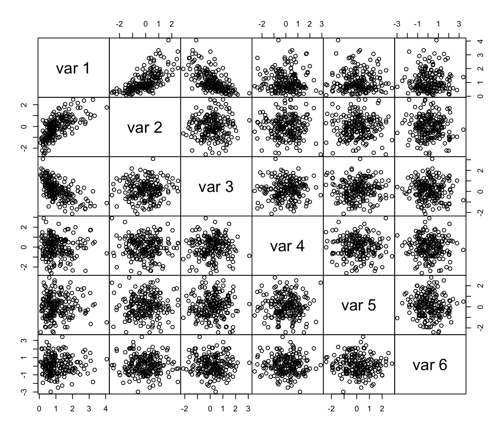
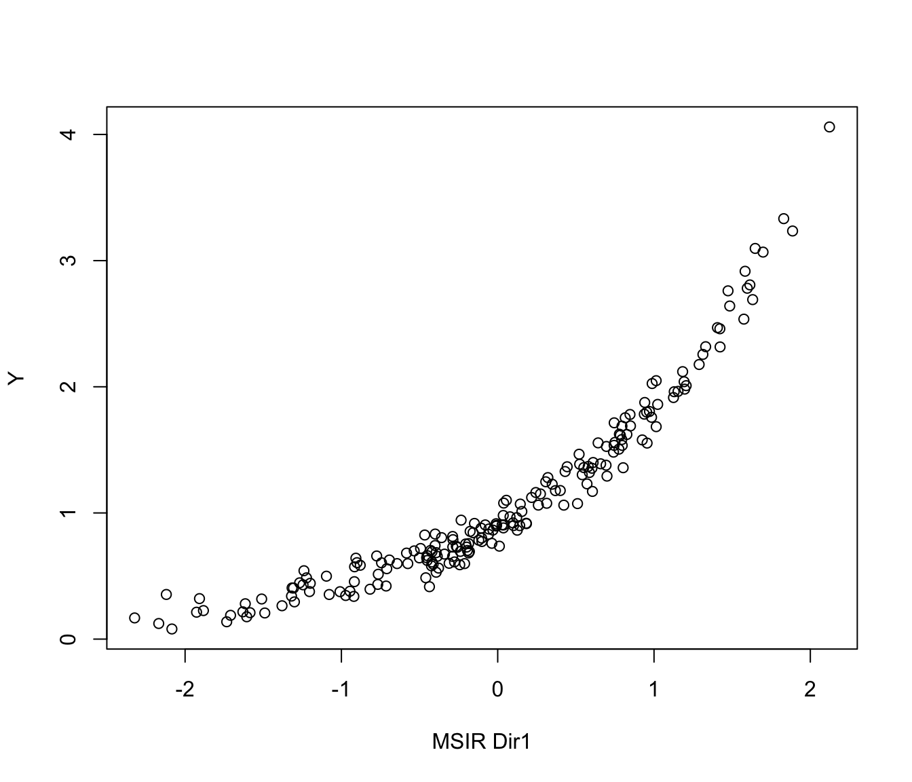
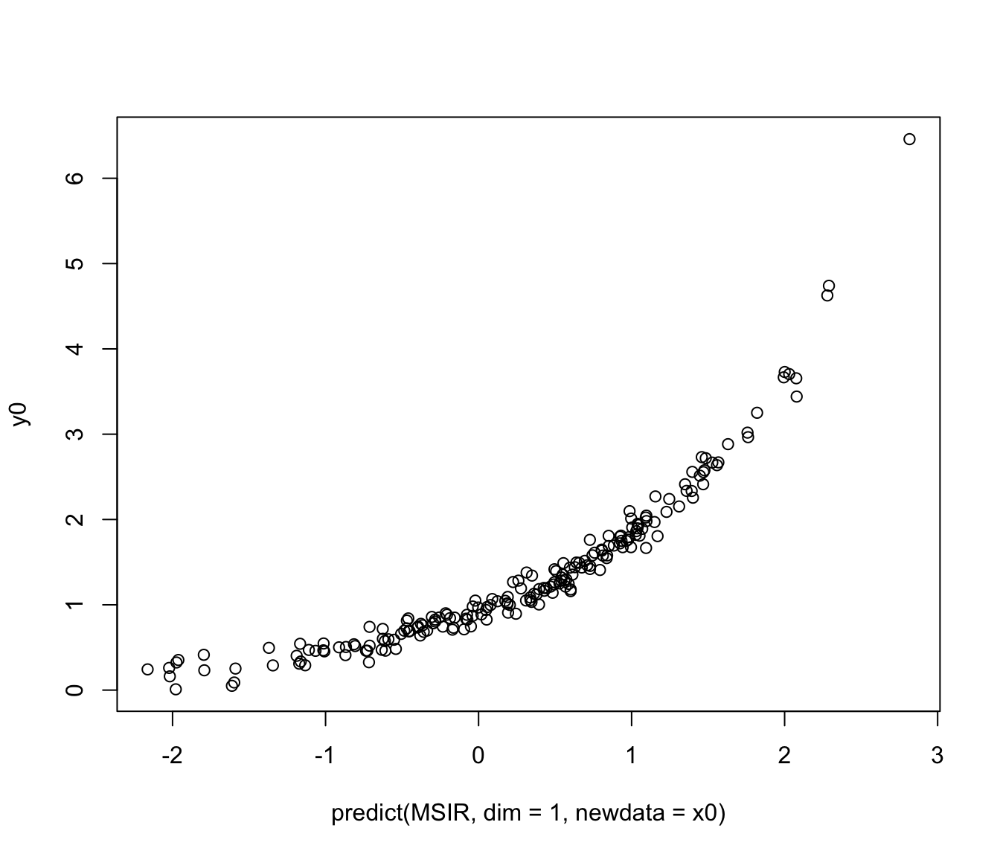

Model-based Sliced Inverse Regression directions
predict.msir.RdMSIR estimates a set of \(d \le p\) orthogonal direction vectors of length \(p\) which are estimates of the basis of the dimensional reduction subspace.
Usage
# S3 method for class 'msir'
predict(object, dim = 1:object$numdir, newdata, ...)Value
The function returns a matrix of points projected on the subspace spanned by the estimated basis vectors.
References
Scrucca, L. (2011) Model-based SIR for dimension reduction. Computational Statistics & Data Analysis, 55(11), 3010-3026.
Author
Luca Scrucca luca.scrucca@unipg.it
Examples
n <- 200
p <- 5
b <- as.matrix(c(1,-1,rep(0,p-2)))
x <- matrix(rnorm(n*p), nrow = n, ncol = p)
y <- exp(0.5 * x%*%b) + 0.1*rnorm(n)
pairs(cbind(y,x), gap = 0)

MSIR <- msir(x, y)
summary(MSIR)
#> --------------------------------------------------
#> Model-based SIR
#> --------------------------------------------------
#>
#> Slices:
#> 1 2 3 4 5 6
#> GMM XII XXX VVE VEE XXX EEI
#> Num.comp. 1 1 2 2 1 2
#> Num.obs. 33 33 26|7 24|9 33 10|25
#>
#> Estimated basis vectors:
#> Dir1 Dir2 Dir3 Dir4 Dir5
#> x1 0.7024558 0.60839 0.203601 0.143848 -0.15454
#> x2 -0.7109685 0.73510 0.243302 0.058432 -0.16883
#> x3 -0.0138463 0.02881 -0.219786 0.898336 0.40682
#> x4 0.0284116 0.25696 -0.095483 -0.390935 0.83908
#> x5 -0.0089805 -0.15045 0.917566 0.126713 0.27939
#>
#> Dir1 Dir2 Dir3 Dir4 Dir5
#> Eigenvalues 0.91359 0.1859 0.11066 0.025298 0.010362
#> Cum. % 73.33299 88.2549 97.13761 99.168286 100.000000
plot(MSIR, which = 1, type = "2Dplot")

all.equal(predict(MSIR), MSIR$dir)
#> [1] TRUE
predict(MSIR, dim = 1:2)
#> Dir1 Dir2
#> [1,] -0.583271363 0.05688139
#> [2,] 0.586516915 0.56464628
#> [3,] 0.699109331 -1.16039645
#> [4,] 0.937829896 1.04407785
#> [5,] -0.493455003 -0.34953621
#> [6,] -0.359065898 1.14710930
#> [7,] 1.330409511 1.12217253
#> [8,] -0.423727960 0.36222116
#> [9,] 0.802568179 0.43392210
#> [10,] 0.695395427 -1.55265524
#> [11,] -0.242717397 -0.50580893
#> [12,] 0.182375341 1.16425896
#> [13,] -0.288503067 -0.45526593
#> [14,] -1.319233133 -0.53060600
#> [15,] -0.451156643 0.59995440
#> [16,] -1.239580301 0.39098189
#> [17,] -0.450268305 0.64039001
#> [18,] 0.097901344 1.64349029
#> [19,] -1.510104433 -0.65141765
#> [20,] 0.121471319 -0.73652092
#> [21,] 1.013800786 0.25763761
#> [22,] 0.970833515 -0.32707651
#> [23,] -0.709765388 -0.90006587
#> [24,] -0.211860946 0.24875593
#> [25,] -1.614840965 -1.15344493
#> [26,] 0.693133873 0.80544809
#> [27,] 1.023467949 0.01467181
#> [28,] -0.767290428 0.66126261
#> [29,] 0.984169413 0.06826555
#> [30,] -0.148786759 1.22726009
#> [31,] -0.466950022 -0.43604705
#> [32,] -0.276215479 -1.37250226
#> [33,] -0.204917287 0.74558961
#> [34,] -1.078072340 0.01866589
#> [35,] -0.920395261 1.01956358
#> [36,] -0.915800581 -1.54084696
#> [37,] -0.693038836 0.43915095
#> [38,] -1.199194594 0.08773774
#> [39,] -0.288585981 0.08518980
#> [40,] 0.038148520 -0.73524861
#> [41,] -2.168536044 0.70025456
#> [42,] -0.393914044 0.17624971
#> [43,] 0.369148995 -0.21478389
#> [44,] 1.192539864 2.36173436
#> [45,] -0.157775809 -1.47500209
#> [46,] 0.524271746 -1.28603824
#> [47,] -0.106183133 0.31389282
#> [48,] -0.030681741 -0.63581565
#> [49,] -0.436660779 -0.87167418
#> [50,] 1.613320295 0.07198957
#> [51,] -1.882619496 0.10637585
#> [52,] 0.745185537 0.49521511
#> [53,] 0.602763903 0.91001074
#> [54,] 0.849377675 -0.72210774
#> [55,] -1.490078985 -0.44144178
#> [56,] 0.313481370 0.33000405
#> [57,] 0.028067960 -1.34377906
#> [58,] -0.501069876 0.99810947
#> [59,] -0.340520773 -0.84248735
#> [60,] 0.744628603 -0.68202959
#> [61,] 1.596456505 -1.36862889
#> [62,] -0.258845243 -1.08286262
#> [63,] -0.454829136 0.48699149
#> [64,] 1.153539143 1.01917184
#> [65,] 0.924838793 0.41253203
#> [66,] -2.322841280 -0.89871862
#> [67,] 0.320918787 -0.21534053
#> [68,] 0.510590773 0.17197063
#> [69,] -0.120961441 0.77809691
#> [70,] 0.940629711 0.11361708
#> [71,] 0.243860115 1.92671458
#> [72,] -0.460077602 -1.50040147
#> [73,] -1.926644966 0.25066780
#> [74,] 0.955698290 -1.62860734
#> [75,] -0.400811934 -0.38629999
#> [76,] -0.575173779 1.31268431
#> [77,] 1.422580762 1.86052819
#> [78,] 0.184035924 -0.52071997
#> [79,] 1.288763017 -0.26158648
#> [80,] -0.413025620 1.80285442
#> [81,] 0.431206664 0.98966930
#> [82,] -0.286372505 0.09767694
#> [83,] -0.643692755 0.38850690
#> [84,] -0.429324629 0.21704218
#> [85,] 0.794951124 -0.45172986
#> [86,] 0.815781992 1.02932777
#> [87,] -0.198754693 -0.55480912
#> [88,] -0.176530367 -0.19465334
#> [89,] -0.193920887 1.85173190
#> [90,] -0.234155715 -1.23009258
#> [91,] -0.534248539 0.72433894
#> [92,] 0.775276092 1.78999757
#> [93,] 0.035398478 0.02890304
#> [94,] 1.697483153 -0.50628344
#> [95,] -0.400100327 -1.34443492
#> [96,] 0.610477537 0.40216872
#> [97,] 0.778450348 0.29607754
#> [98,] -0.185846797 1.10302507
#> [99,] -0.879495250 -0.43701955
#> [100,] 0.140985421 -0.26204738
#> [101,] 1.484319316 -0.58197726
#> [102,] 0.987905696 -0.65012066
#> [103,] -0.310981454 -0.56589957
#> [104,] -0.774241786 -0.17913685
#> [105,] -2.084346320 -0.55719006
#> [106,] 1.582605211 0.03222398
#> [107,] 0.307364901 0.67784947
#> [108,] 0.784596851 0.43626348
#> [109,] 1.205704066 -0.95099627
#> [110,] 0.793710878 -0.71730750
#> [111,] -1.907932390 0.14691415
#> [112,] -1.095750684 -0.76234024
#> [113,] -0.900259602 1.49338506
#> [114,] -0.816804502 0.96292933
#> [115,] 1.473543505 -1.61551760
#> [116,] 0.078747061 -0.06960531
#> [117,] 0.642291981 1.67885306
#> [118,] -0.238963209 -0.05974026
#> [119,] -1.605732427 0.14829398
#> [120,] -0.010193861 -0.33598292
#> [121,] 0.144361463 1.08607720
#> [122,] 1.886419530 1.72542529
#> [123,] 1.014012248 -0.20356495
#> [124,] 0.273413677 -2.04367287
#> [125,] -1.315607595 0.39981105
#> [126,] -0.743131843 -0.37018605
#> [127,] -0.007237442 -0.22412631
#> [128,] -0.764130015 -0.20078857
#> [129,] -2.120001507 -1.56242054
#> [130,] -1.733704150 -0.01445850
#> [131,] -1.709039931 0.56635421
#> [132,] 0.658417485 -0.52517562
#> [133,] 1.631021528 2.08925394
#> [134,] 1.195855732 -2.31633055
#> [135,] -0.386635876 0.19096398
#> [136,] -1.306508911 -1.03641886
#> [137,] -0.420531653 0.48357565
#> [138,] -1.245382212 -1.19583156
#> [139,] 0.826351319 0.26691919
#> [140,] -1.584635926 1.04465707
#> [141,] -0.101246357 -1.75317318
#> [142,] -0.713941520 -0.85256027
#> [143,] -0.907330526 -0.15258507
#> [144,] 1.421239780 -0.84117917
#> [145,] -0.378477885 -2.83868951
#> [146,] -0.059002336 -1.68587410
#> [147,] 0.422796417 1.28623444
#> [148,] -0.008865249 0.08427358
#> [149,] 1.829741124 -0.37866324
#> [150,] -1.008990831 0.02514176
#> [151,] 1.312591712 -1.38508933
#> [152,] 2.122514213 -0.37671431
#> [153,] 0.571297808 -1.35429558
#> [154,] 1.183077850 -0.22320222
#> [155,] 1.574760690 -0.28406244
#> [156,] -0.103041393 -1.33494187
#> [157,] -0.420545907 0.75879303
#> [158,] 0.125006087 0.45097160
#> [159,] -0.393752823 0.80215524
#> [160,] 0.036364758 1.85103334
#> [161,] 0.400211171 0.19471644
#> [162,] 0.578891188 -1.73973684
#> [163,] -0.186025865 0.59813351
#> [164,] 0.348594221 1.40388854
#> [165,] 0.038085308 -0.31955426
#> [166,] 0.605969809 1.33117408
#> [167,] 0.444419199 0.52584894
#> [168,] -1.379862600 -1.27741931
#> [169,] -0.056821104 -0.86626821
#> [170,] -1.223372266 1.59320560
#> [171,] 1.405640709 0.75353976
#> [172,] 0.259835211 -0.04021414
#> [173,] 0.520746039 -0.53698067
#> [174,] 0.540822087 0.69264423
#> [175,] -1.267341097 -0.25557397
#> [176,] 0.216859016 0.73989930
#> [177,] 0.154431141 0.40614635
#> [178,] -1.300568148 0.76851631
#> [179,] 1.647141169 -0.74334415
#> [180,] -0.264899204 -1.05463610
#> [181,] 0.550844359 1.10278589
#> [182,] -0.972680103 -0.50082033
#> [183,] 0.952827628 0.04996772
#> [184,] -0.180983276 -0.67138241
#> [185,] -0.287480567 -0.23858259
#> [186,] 0.796551982 -1.27915220
#> [187,] -1.204101426 -0.31368249
#> [188,] 1.129163684 -1.35540815
#> [189,] -0.945173433 1.84319589
#> [190,] 0.055320420 -0.24531869
#> [191,] 0.740838361 -0.91502720
#> [192,] 1.124476387 1.42781091
#> [193,] 0.846308738 -1.36608548
#> [194,] -0.037386104 -0.67611049
#> [195,] -0.079879074 0.89628912
#> [196,] -0.917128583 1.82687772
#> [197,] -1.630431451 2.48800752
#> [198,] 0.749864980 0.96528475
#> [199,] 0.101180543 -0.79549045
#> [200,] 0.010678804 0.49371996
x0 <- matrix(rnorm(n*p), nrow = n, ncol = p)
y0 <- exp(0.5 * x0%*%b) + 0.1*rnorm(n)
plot(predict(MSIR, dim = 1, newdata = x0), y0)
